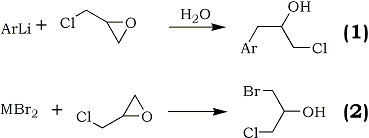

ASCII by Aurelius, HTML by Rhodium
In connection with the synthesis of some alkamine ethers1, it was of interest to prepare a series of aromatic secondary alcohols by the action of aryllithium reagents upon epichlorohydrin2. Accordingly, phenyl-, p-tolyl-, 1-naphthyl-, and p-dimethylaminophenyllithium were treated with epichlorohydrin to give satisfactory yields of the corresponding arylpropylene chlorohydrins. The reaction of 9-fluorenyllithium under like conditions did not produce an isolable product.
Similar reactions employing grignard reagents have been carried out with epichlorohydrin to give generally unsatisfactory conversions to the desired products. The best yield of 1-chloro-3-phenyl-2-propanol prepared from phenylmagnesium bromide was 18.2%3.
Yield data were not given in reports of authors employing p-tolylmagnesium bromide4 and 1-naphthylmagnesium bromide3c. The product, 1-chloro-3-(p-dimethylaminophenyl)-2-propanol, which was prepared from the respective aryllithium has not been reported.

It has been shown previously5 that the low yields of substituted chlorohydrins prepared from the less reactive organometallic compounds resulted from competition between reaction (1) and reaction (2) where M is a metallic cation capable of coordination with etheric oxygens.
With phenylcadmium chloride6, for example, the only material isolated after a 13 h reaction at RT was a dense liquid believed to be a mixture of glycerol bromochlorohydrin and glycerol dichlorohydrin.
The opening of the oxide ring by lithium bromide present in phenyllithium solutions may be responsible for the low yields obtained under ordinary conditions, since equivalent quantities of phenyllithium and epichlorohydrin at ether-reflux temperature gave only 9.8% of
1-chloro-3-phenyl-2-propanol
Epichlorohydrin (0.44 mole) in 60ml of anhydrous ether was placed in a 500ml three-necked flask fitted with a nitrogen inlet tube, mechanical stirring and a dropping funnel. The flask and contents were cooled to –78°C in a dry ice/tetrachloroethylene bath and 290ml (0.44 mole) of phenyllithium was added over 30 min. Then the bath was allowed to warm to 0°C.
The hydrolysis7 was carried out in dilute sulfuric acid containing crushed ice. The ether layer was separated
and washed successively with water, sodium carbonate solution and water again. Dry with sodium sulfate. Subsequent to
drying, ether was removed.
Similarly, 180 mmol phenyllithium was treated with 180 mmol epichlorohydrin, yielding 36.6g (66.2%) of the title compound, bp 125-127°C/11-12mmHg, n20D 1.5420 and d24 1.155.